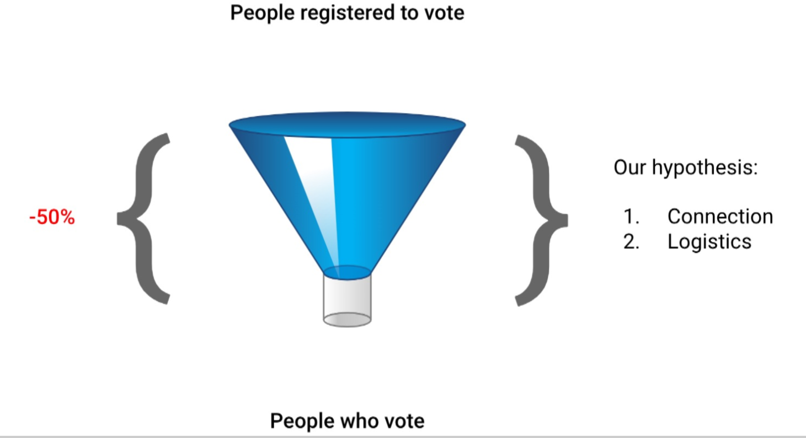

The Lower Voter Turnout Epidemic
Less than 50% of registered voters participate in local elections
Those 65 or older and people who are wealthy are three times more likely vote than someone between the ages of 18-24
The United States has one of the lowest voter turnout rates in the world